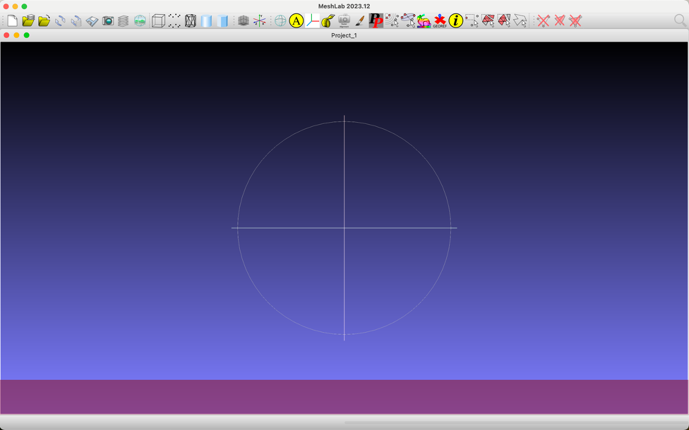
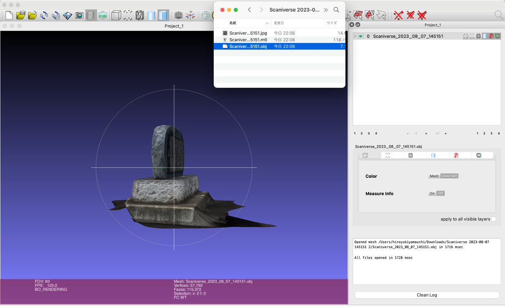
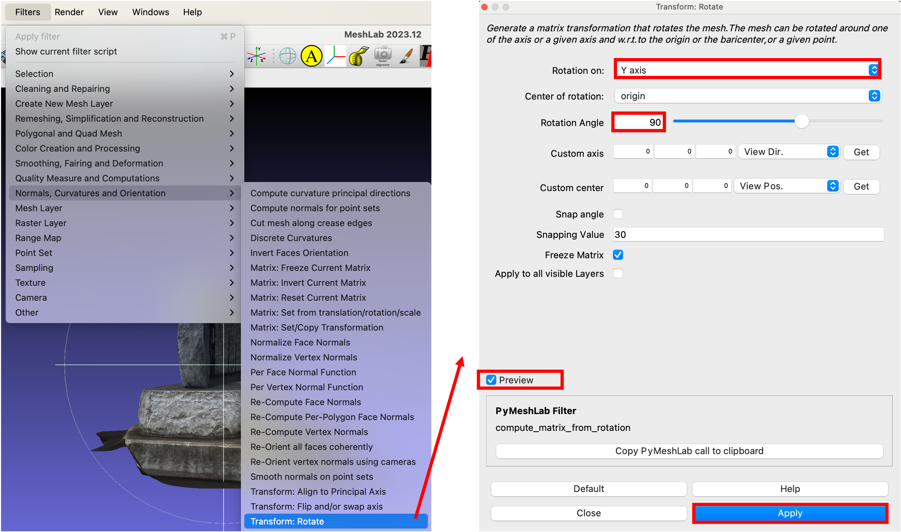
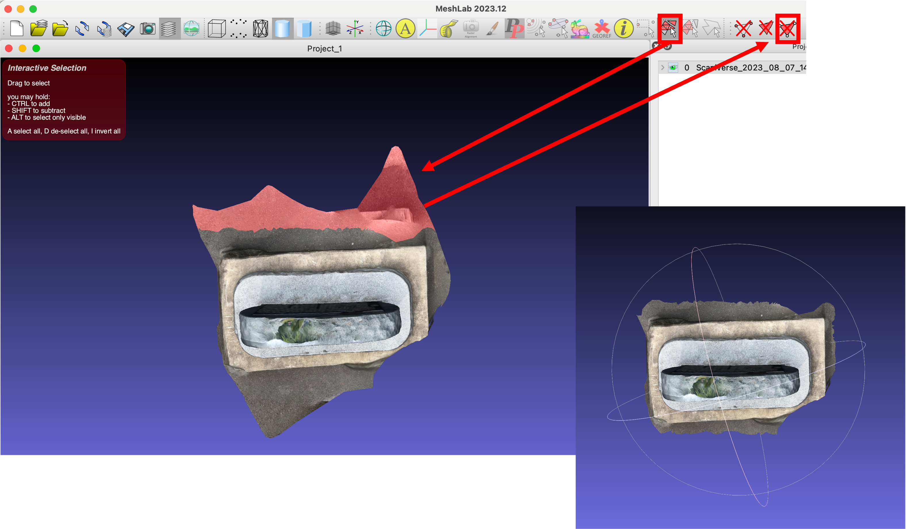
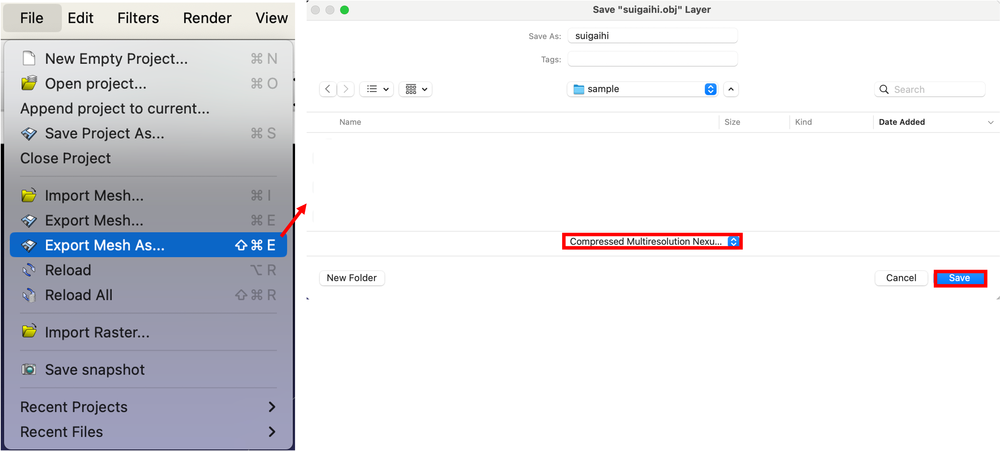

3Dモデルとウェブ展開
本教材は、スマートフォンアプリを用いて、3Dモデルを作成する手法を実習形式で解説します。以下は、Windowsで実施することが望ましいです。
Menu
- MeshLabを用いたモデル処理と書き出し
- 3DHOPでのWeb表示
MeshLabを用いたモデル処理と書き出し
MeshLabは、オープンソースの3Dメッシュ処理ソフトである。MeshLabのwebページからOSにあわせてソフトをインストールする。インストール後、ソフトを起動する。 
objファイルを読み込む
以下のように、.objファイルをドラッグアンドドロップでMeshlabに読み込む。 
向きを調整する
Normals, Curvatures and Orientation > Transform: Rotateを実行する。以下のように設定し、Previewを確認した後、Applyをクリックする。

不要な面やノイズの除去
モデルを上から見下ろすようにし、以下のアイコンをクリックする。不要な面を手作業で選択して削除する。 
モデルを書き出す
今回は、3DHOPで読み込むため、Export Mesh As...を選択し、.nxzの形式で書き出す。

以下のようなウィンドウが表示されるが、今回は、デフォルトでOKをクリックする。指定したフォルダに.nxzファイルがあることを確認しておく。※ Macではうまく書き出せない場合がある。

3DHOPでのWeb表示
3DHOPは、3Dモデルが表示できるオープンソースのフレームワークである。ここでは、3DHOPを用いて、上記で書き出したnxzファイルを読み込む。
3DHOPの入手
3DHOPのダウンロードページ移動し、を入手する。DOWNLOAD 3DHOP*stable [v4.3]をダウンロードする。ダウンロードした.zipファイルを解凍し、examples > HOWTO_1.2_interface_dimensioning.htmlを表示し、仕様を確認する。この際、ローカルサーバーで表示ですれば、モデルも確認できる。

3DHOPでの.nxsの表示
HOWTO_1.2_interface_dimensioning.htmlを複製する。名称をsample.htmlに変更し、テキストエディタで開く。ローカルサーバーをたてられる場合、modelsの中に、上記で書き出したnxsファイルを移動する。以下のように、htmlファイルの一部（presenter.setSceneの部分）を２箇所、変更する。
<script type="text/javascript">
var presenter = null;
function setup3dhop() {
presenter = new Presenter("draw-canvas");
presenter.setScene({
meshes: {
"3d" : { url: "models/suigaihi.nxz" }
},
modelInstances : {
"Model1" : { mesh : "3d" }
}
});
}
上書きして、表示すれば次のように表示される。